Un proyecto es una pregunta en movimiento
En el club partimos de algo que queremos entender o mejorar. Después planeamos una prueba, registramos lo que ocurre y usamos los resultados para decidir qué hacer. Estas fotografías muestran a estudiantes participando en proyectos reales de Highpoint.
1. Cultivo del hongo ostra
En el proyecto de hongos observamos cómo el micelio transforma un material vegetal en alimento y cómo cambia el cultivo con el paso del tiempo. El hongo ostra se conoce científicamente como Pleurotus ostreatus. El micelio es una red de filamentos; el sustrato es el material en el que crece.
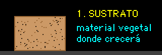
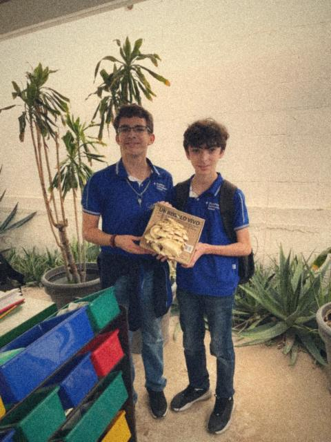
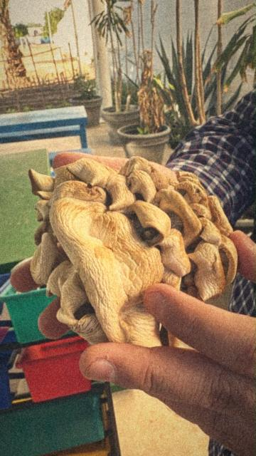
¿Qué aprendemos?
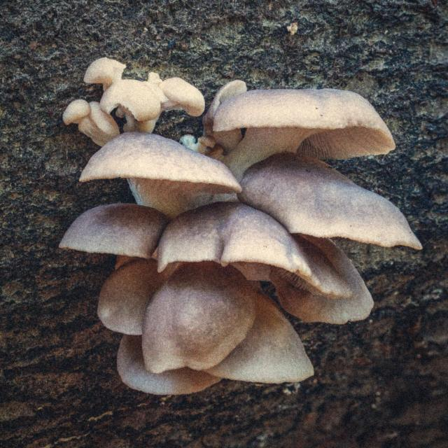
- Cómo describir cambios con palabras, dibujos y fechas.
- Por qué es importante controlar una variable a la vez.
- Cómo los hongos participan en la descomposición de materia orgánica.
Pregunta para investigar: ¿cómo cambia el crecimiento si varía la humedad? Haz cualquier experimento de cultivo con tu docente y siguiendo las normas de higiene.
¡Cuidado! Nunca recolectes ni comas hongos silvestres. Algunos hongos venenosos se parecen a los comestibles, y una foto no basta para reconocerlos.
2. Robótica educativa
Un robot une piezas, sensores, motores e instrucciones. En esta actividad los equipos exploran cómo se ensamblan pequeños robots y cómo un programa puede convertir una lectura del entorno en movimiento.
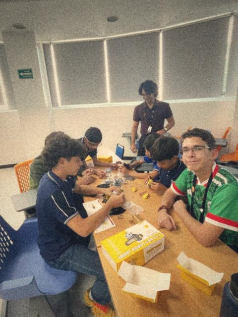
Del sensor a la decisión
- El sensor mide algo del entorno, como la luz reflejada por el piso.
- El microcontrolador compara la medición con una regla.
- El programa ordena a los motores avanzar o girar.
- El equipo prueba el resultado y ajusta el diseño.
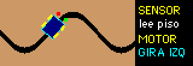
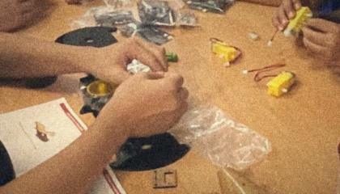
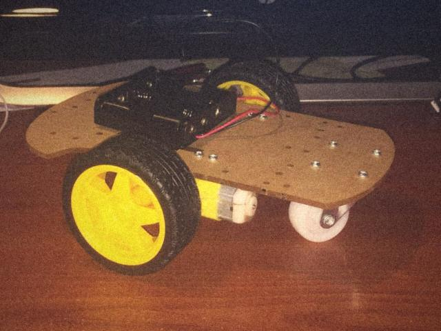
Reto CiTIAM: dibuja una pista con curvas y marca dónde pondrías sensores para que el robot no pierda la línea. Después, prográmalo sin soldar nada en la misión 6 del taller de bloques.
3. Jardín y plantas de Sonora
El jardín escolar permite hacer ciencia observando seres vivos en su entorno. Medir la sombra, registrar cambios en las hojas y comparar la humedad del suelo son maneras de construir una investigación a partir de algo cercano.
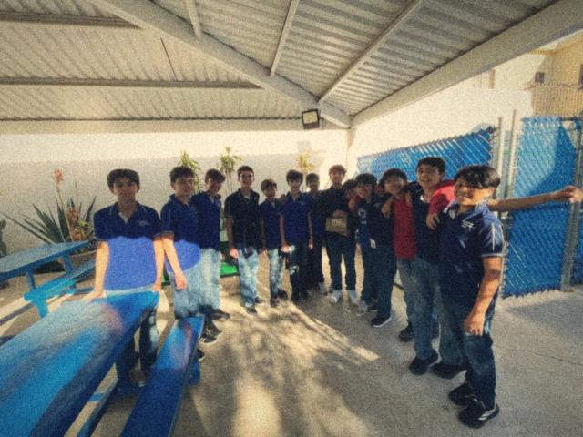
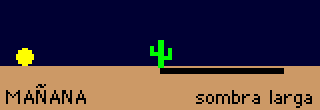
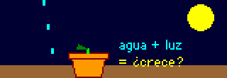
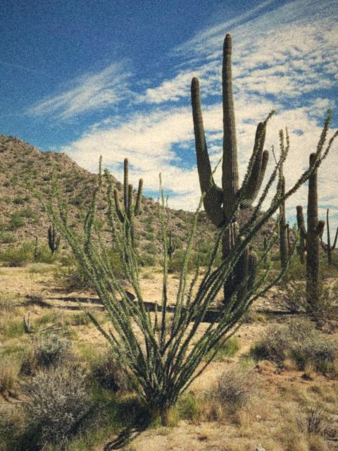
En Hermosillo, el calor y la disponibilidad de agua hacen importante pensar cómo cuidamos las plantas. Una comparación escolar debe ser segura y justa: por ejemplo, observa dos plantas de la misma especie y anota la luz que recibe cada una, sin dejar de cuidarlas.
Fíjate en el ocotillo de la foto. Cuando hay sequía pierde sus hojas y, cuando llueve, le salen de nuevo. Es una respuesta que se puede observar con fotos tomadas en distintas fechas.
¿Te animas a cuidar un cultivo sin ensuciarte? Adopta a tu Hongotchi en el arcade.
Pregunta para el cuaderno: ¿en qué lugar del jardín se mantiene más tiempo la sombra? Haz una observación en distintos horarios y anota la fecha y la hora.
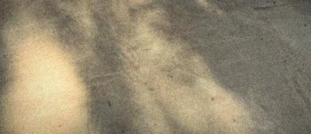
Tu proyecto también puede aparecer aquí
Propón una pregunta relacionada con tu comunidad, reúne materiales con ayuda de tu docente y comparte el proceso, no solo el resultado. Antes de publicar fotografías de personas, confirma que cuentan con autorización.
EXPLORAR TEMAS STEAM VER TODAS LAS FOTOS VER CASOS DE ÉXITO